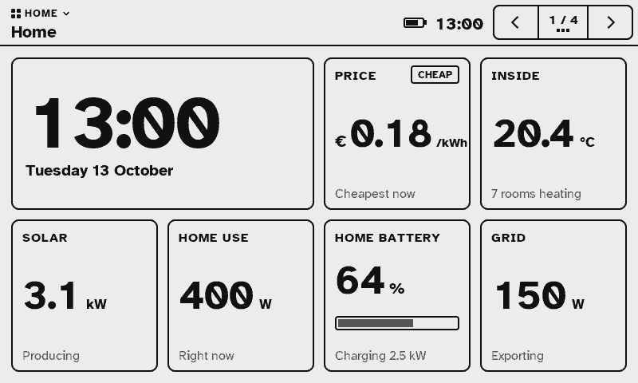
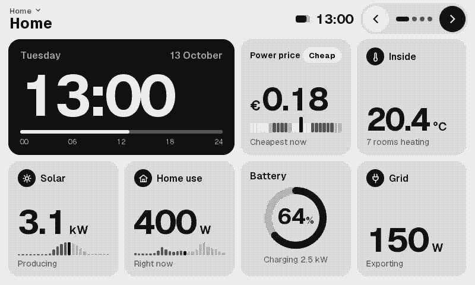
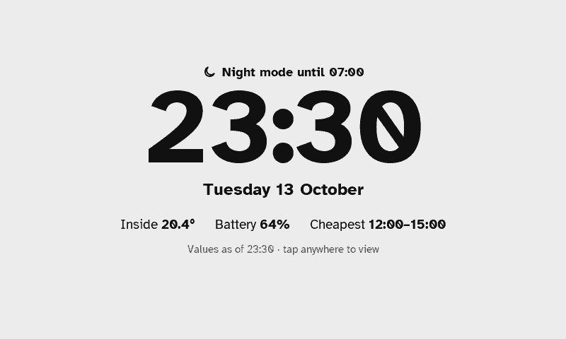
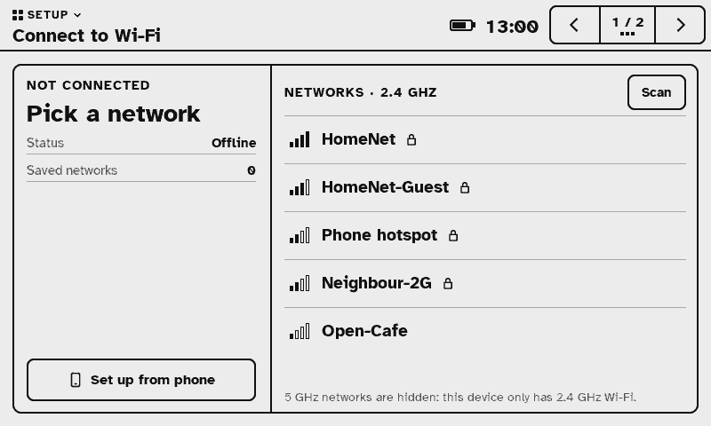

HA Paper
HA Paper replaces the reader software on an Xteink X4 Pro with a Home Assistant dashboard. The e-ink screen shows the time, power price, solar, battery and room temperatures from your own Home Assistant, and you can switch lights and heating by touch. It talks to Home Assistant over your Wi-Fi; nothing goes through a cloud service.
Alpha. HA Paper and this installer have not been tested on a real X4 Pro yet. Only continue if you are prepared to put the stock firmware back from the backup this page makes in step 2.
What it looks like
Rendered by the firmware itself, at the panel's 800 × 480 pixels and four shades of gray.




What you need
- An Xteink X4 Pro.
- The magnetic pogo to USB-C adapter that came with it, and a USB-C cable that carries data. Many cables that came with chargers only charge; with one of those the computer sees nothing.
- A desktop or laptop computer with Chrome or Edge (Windows, macOS or Linux). Firefox, Safari and phones can't talk to USB devices from a web page.
- A running Home Assistant on the same network, and a 2.4 GHz Wi-Fi network.
- About 10 minutes. The backup alone takes about 3.
This browser can't do it
Installing needs Web Serial: Chrome, Edge or another Chromium browser on a desktop computer (Windows, macOS, Linux), on an https:// page. Firefox, Safari and phones don't have it. You can still read the steps below.
Install
Loading the bundled firmware files…
Connect in download mode
Clip the pogo adapter onto the X4 Pro and plug the cable into your computer. Then put the X4 Pro in download mode, so it accepts new software instead of starting the reader:
- Press and hold Left.
- While still holding Left, press Reset once and let go of Reset.
- Release Left. The screen does not change; that is normal.
Within about 10 seconds, click Connect and pick the Espressif device in the list the browser shows.
Nothing in the list, or "Failed to connect": do the button steps again and click Connect sooner. An empty list usually means a charge-only cable.
Back up the stock firmware
Copies everything on the X4 Pro to a file on your computer (about 3 minutes). Keep that file: it is the only way back to the original reader software.
Install HA Paper
Checks the files, asks you once, then writes HA Paper and restarts the display. Don't unplug until it says it is done. If you install again later, your saved Wi-Fi, Home Assistant link and screens are kept.
Wi-Fi
After installing, leave the cable in. This page asks the display over USB which networks it sees; type your Wi-Fi password here and the display joins. Nothing has to be typed on the display.
Progress
Log
After installing
- The display restarts by itself (press Reset if it doesn't) and shows Connect to Wi-Fi. Join your Wi-Fi from step 4 on this page, then unplug the cable.
- If step 4 says the display did not answer: unplug the cable, pick your network on the screen and type the password on the on-screen keyboard. Or tap Set up from phone: join the Wi-Fi HA-Paper-Setup with your phone and a setup page opens.
- The screen then shows a QR code and an address like
ha-paper-1a2b.local. Scan it, or open that address on a phone or computer on the same Wi-Fi. - Click Sign in with Home Assistant and log in on your Home Assistant's own page. The display stores a Home Assistant sign-in key (encrypted), never your password.
- The display redraws with your live data. The same page lets you choose what each screen shows.
Put the stock firmware back
Pick the x4pro_stock_YYYYMMDD.bin you made in step 2 (and its .sha256 file, if you
have it). Connect first (step 1).
Technical details
- Connect reads the secure boot and flash encryption eFuses and stops if either is on, or if it can't read them.
- Backup reads all 16 MB of flash in 256 KB chunks, checks each chunk against the chip's own MD5, and
saves
x4pro_stock_YYYYMMDD.binplus a.sha256file. - Install checks the bundled files against
SHA256SUMSandmanifest.json, checks that the partition table already on the display keeps NVS at 0x9000 (0x5000 bytes), and stops if not. It then writes bootloader, partition table, otadata, app and web console at their own offsets. NVS (0x9000-0xDFFF) and userdata (0xFD0000-0xFEFFFF) are never written: saved Wi-Fi, the Home Assistant link, your screens and settings and the factory panel id survive. The page refuses any write plan that would erase a sector in either. - Wi-Fi uses the Improv Wi-Fi serial protocol (improv-wifi.com) on the display's USB console. The password goes over the cable to the display only; the page does not keep or log it.
- Restore writes a 16 MB backup over the whole flash at 0x0.
- Prefer a script? Each release also ships
x4flash.py, which does the same steps from a terminal. Full notes:docs/FLASHING.md.